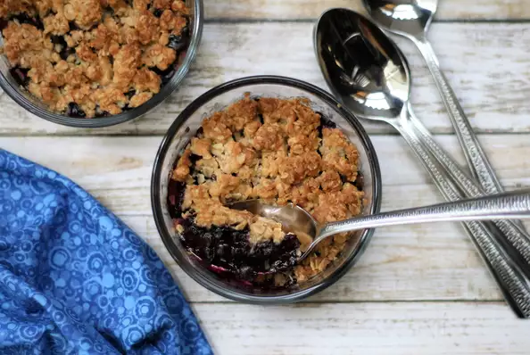

Blueberry Crisp

Description
This makes two servings, perfect for smaller air fryers, but feel free to double the recipe.
Ingredients
Fruit:
- 1 cup frozen blueberries
- 2 teaspoons all-purpose flour
- 1 teaspoon lemon juice
- 1 pinch salt
Topping:
- 3 tablespoons quick-cooking oats
- 1 1/2 tablespoons all-purpose flour
- 1 1/2 tablespoons brown sugar
- 1/2 teaspoon ground cinnamon
- 1 1/2 tablespoons salted butter, softened
Steps
- Preheat an air fryer to 360 degrees F (180 degrees C).
- Combine blueberries, flour, lemon juice, and salt in a small bowl. Toss to coat, then divide the mixture between two 1-cup ramekins.
- Combine oats, flour, brown sugar, and cinnamon for the topping in a small bowl. Mix in softened butter using a fork until mixture is crumbly. Sprinkle over the blueberries.
- Place the ramekins in the air fryer basket and cook until the blueberries are warmed throughout and topping is golden brown, 12 to 14 minutes.